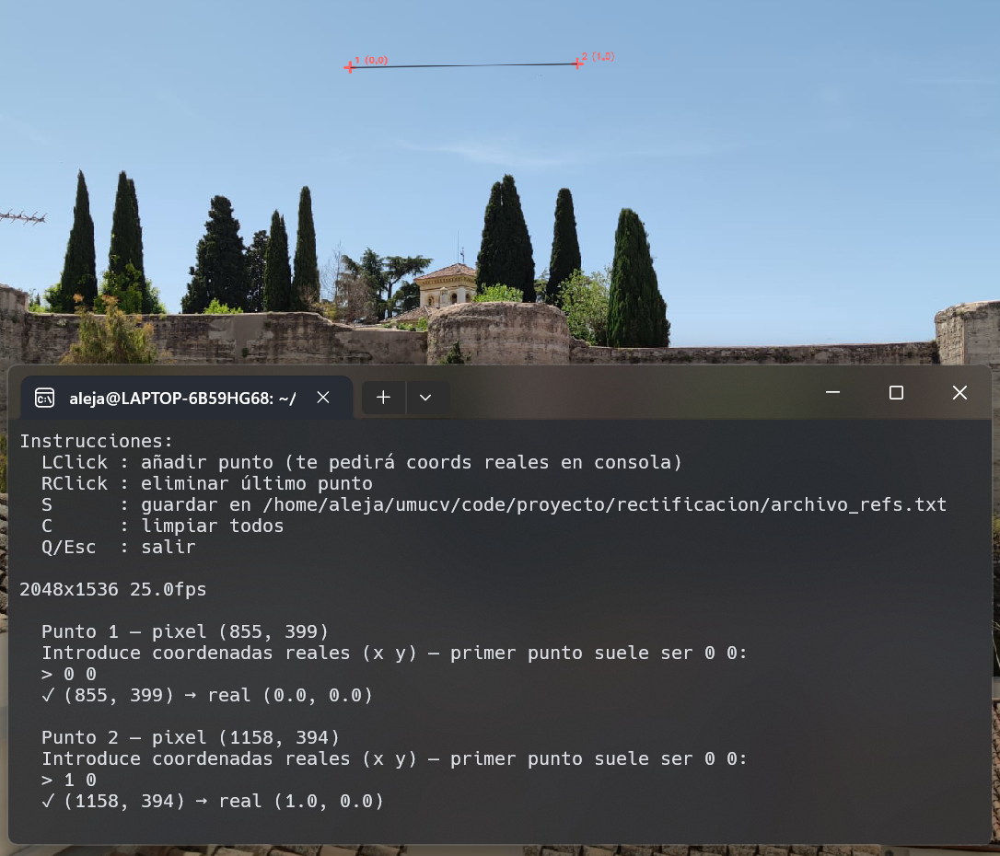
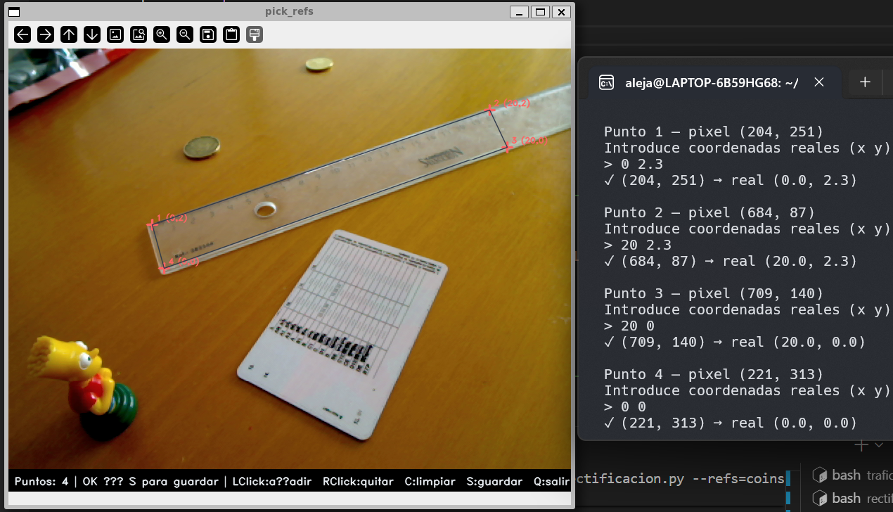
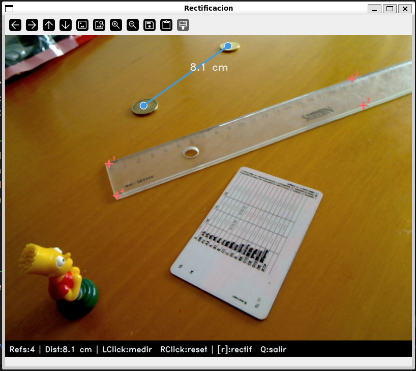
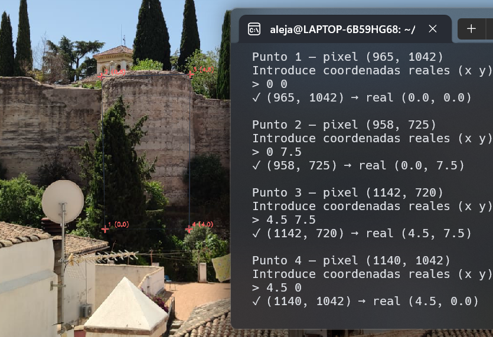
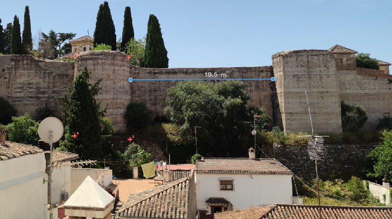
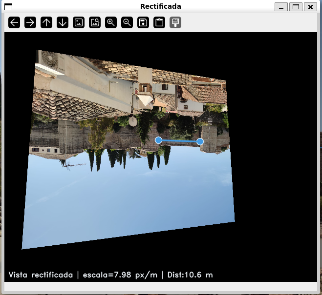
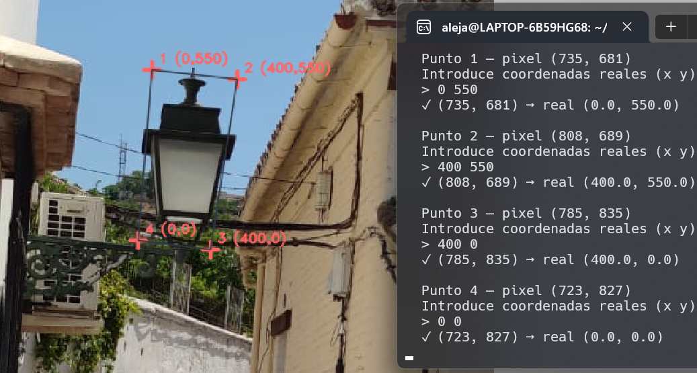
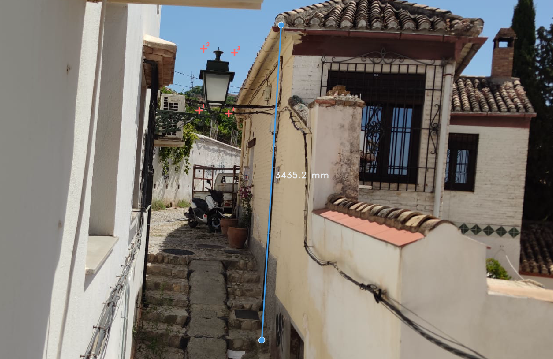
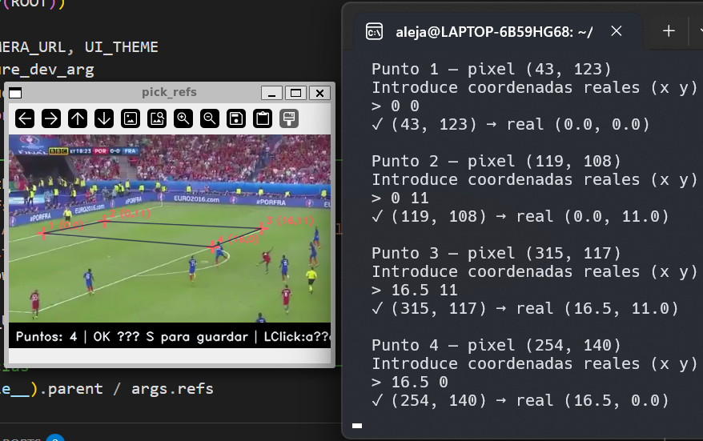
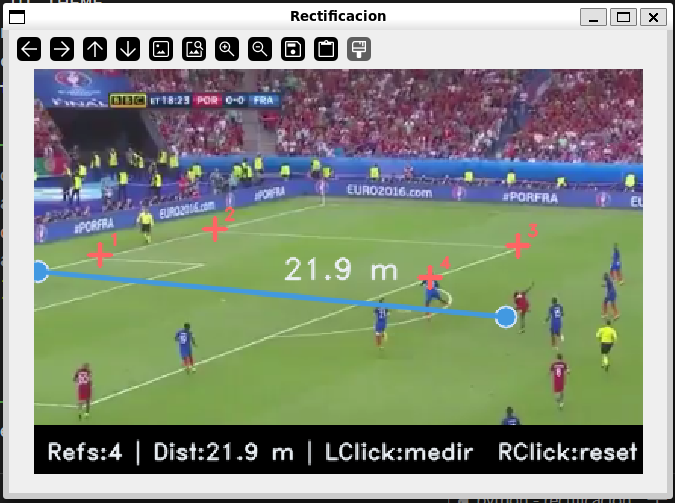

Rectificación de Perspectiva¶
Descripción¶
rectificacion/rectificacion.py permite medir distancias reales en imágenes estáticas tomadas desde cualquier ángulo. El usuario marca 4 o más puntos de referencia con coordenadas reales conocidas; a partir de ellos se calcula una homografía que transforma píxeles a unidades del mundo real. Un segundo script, pick_refs.py, asiste en la creación interactiva del fichero de referencias.
Requisitos y ejecución¶
Entorno
Python 3.10+, OpenCV 4.9, NumPy 1.26.
Flujo de trabajo en dos pasos¶
Paso 1 — Crear el fichero de referencias con pick_refs.py:
Haz clic sobre 4 o más puntos cuyas coordenadas reales conozcas. El programa pedirá las coordenadas en consola tras cada clic y guardará el fichero al pulsar S.
| Tecla | Acción |
|---|---|
| LClick | Anadir punto (pide coords reales en consola) |
| RClick | Eliminar último punto |
| S | Guardar en --out (mínimo 4 puntos) |
| C | Limpiar todos los puntos |
| Q / Esc | Salir |
Paso 2 — Medir con rectificacion.py:
| Tecla / Acción | Descripción |
|---|---|
| LClick | Primer y segundo punto de medición |
| RClick | Limpiar medición actual |
| r | Activar / desactivar ventana rectificada |
| Q / Esc | Salir |
Formato del fichero de referencias
Cada línea contiene cuatro valores numéricos: coordenada X e Y en píxeles y coordenada X e Y en el plano real. Las líneas que empiezan por # son comentarios.
Arquitectura¶
flowchart TD
A[pick_refs.py] -->|LClick + coords reales| B[*_refs.txt]
B --> C[rectificacion.py\n--refs=*_refs.txt]
C --> D[load_refs\npx_img ↔ pts_real]
D --> E[cv.findHomography\nRANSAC 3 px]
E --> F{Click sobre\n2 puntos}
F --> G[px_to_real\ncv.perspectiveTransform]
G --> H[np.linalg.norm\ndistancia en unidades reales]
H --> I[Mostrar etiqueta\nen imagen]
E --> J{r: vista\nrectificada}
J --> K[build_rectified_transform\nescala al canvas 640×480]
K --> L[cv.warpPerspective\nRectificada]
pick_refs.py: cruces amarillas sobre los puntos de referencia marcados. En consola se introducen las coordenadas reales de cada punto.Parámetros clave¶
Homografía¶
| Parámetro | Valor | Descripción |
|---|---|---|
--refs |
refs.txt |
Ruta al fichero de referencias |
--units |
mm |
Etiqueta de unidades que aparece en la medición |
| RANSAC threshold | 3.0 px | Tolerancia de error de reproyección en findHomography |
| Mínimo de referencias | 4 puntos | Necesario para que la homografía esté determinada |
Vista rectificada¶
| Parámetro | Valor | Descripción |
|---|---|---|
| Canvas de salida | 640 × 480 px | Tamano fijo de la ventana rectificada |
| Margen | 35 px | Espacio entre el borde del canvas y el contenido |
Escala s |
calculada | min((W-2M)/span_x, (H-2M)/span_y) px/unidad |
Calidad de la homografía
Al arrancar, el programa imprime Homografía calculada: N/M inliers. Si N < M, algún punto de referencia fue marcado con poca precisión y fue descartado por RANSAC. Con exactamente 4 puntos, RANSAC no tiene efecto pero tampoco dana.
Casos de uso¶
Monedas sobre mesa (coins.png)¶


Referencia: segmento de regla visible en la imagen. Los 4 puntos definen un rectángulo de dimensiones conocidas sobre el plano de la mesa.
Muralla zirí del Albaicín (muralla.jpeg)¶



r) del plano de la muralla: la perspectiva queda eliminada y el lienzo aparece frontal.Referencia: torre de la muralla con dimensiones estimadas de 4.5 × 7.5 m (ancho × alto). El fichero muralla_refs.txt marca las cuatro esquinas de esa torre como sistema de coordenadas.
Calle con cuesta del Albaicín (cuesta.jpeg)¶


Referencia: rectángulo circunscrito al farol típico de calle espanola con dimensiones conocidas: 400 × 550 mm (ancho × alto). El plano de referencia es el plano vertical de la fachada donde está anclado el farol.
Gol de Éder — Euro 2016 (gol-eder.png)¶


Referencia: rectángulo sobre el terreno de juego de 16.5 × 11 m definido a partir de las líneas reglamentarias del área y el punto de penalti. Permite medir distancias entre jugadores directamente sobre la retransmisión.
Código clave¶
Carga de referencias y homografía¶
Vista rectificada¶
Decisiones de diseno¶
Dos scripts independientes: pick_refs + rectificacion¶
Separar la creación del fichero de referencias del proceso de medición permite reutilizar el mismo .txt en múltiples sesiones sin repetir el marcado. Las referencias son persistentes y editables a mano.
RANSAC en findHomography¶
Con exactamente 4 puntos, RANSAC no tiene efecto (no hay suficientes muestras para votar). Sin embargo, con 5 o más referencias tolera hasta un punto marcado con error apreciable sin degradar la homografía. El umbral de 3.0 px descarta outliers claros sin ser demasiado restrictivo.
Vista rectificada calculada una sola vez¶
build_rectified_transform se llama al inicio sobre el primer frame. La homografía H_disp compone H con la transformación de escala/traslación al canvas, por lo que warpPerspective aplica todo en una sola pasada sin recomputar nada por cada pulsación de r.
Plano único de referencia¶
Toda la medición asume que los puntos marcados y los puntos a medir son coplanares. Esta restricción es explícita por diseno: no hay corrección de distorsión de lente ni reconstrucción 3D.
Limitaciones¶
Limitaciones conocidas
- Solo mide distancias en el mismo plano que los puntos de referencia: objetos fuera de ese plano dan mediciones incorrectas.
- La precisión de la homografía depende directamente de con qué cuidado se hayan marcado los puntos en
pick_refs.py; un error de unos pocos píxeles en una referencia puede propagarse a centímetros en la medición. - No corrige distorsión radial de la lente: en objetivos muy angulares, las líneas rectas aparecen curvadas y la homografía plana no es suficiente.
- La vista rectificada puede presentar zonas negras (sin información) si la imagen original fue tomada con un ángulo muy oblicuo respecto al plano.
- Con referencias de un plano vertical (como el farol de la cuesta), cualquier objeto que no esté anclado a ese plano (personas, vehículos) no puede medirse correctamente.
- El fichero de referencias debe rehacerse cada vez que se use una imagen diferente o si la cámara se mueve entre la toma de referencia y la medición.